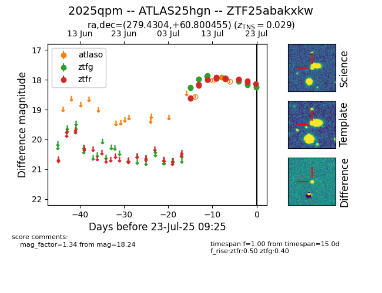

Target ZTF25abakxkw at 2025-07-23 12:37, see:
FINK: fink-portal.org/ZTF25abakxkw
Lasair: lasair-ztf.lsst.ac.uk/objects/ZTF25abakxkw
ALeRCE: alerce.online/object/ZTF25abakxkw
TNS: wis-tns.org/object/2025qpm
YSE: ziggy.ucolick.org/yse/transient_detail/2025qpm
alt names
ZTF25abakxkw (ztf,fink)
2025qpm (tns,yse)
ATLAS25hgn (atlas)
coordinates:
equatorial (ra, dec) = (279.4304,+60.80046)
galactic (l, b) = (90.4042,+25.08801)
photometry
last atlaso=18.06, ztfg=18.24, ztfr=18.13
4 atlaso, 16 ztfg, 15 ztfr detections
